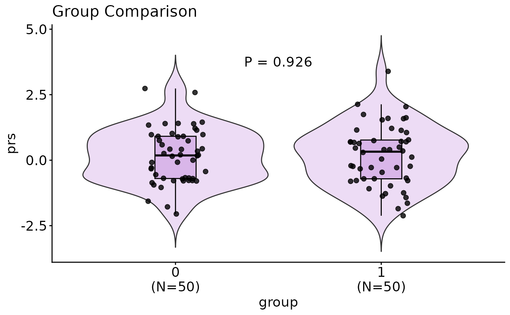
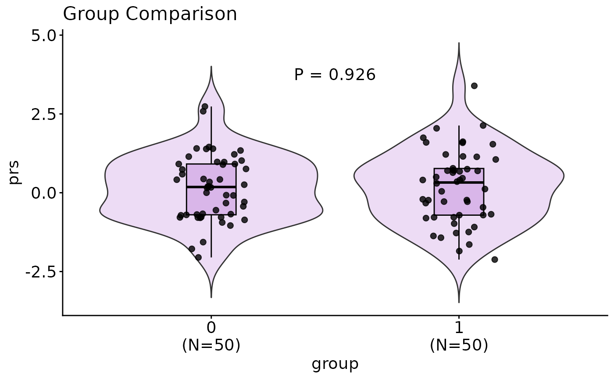
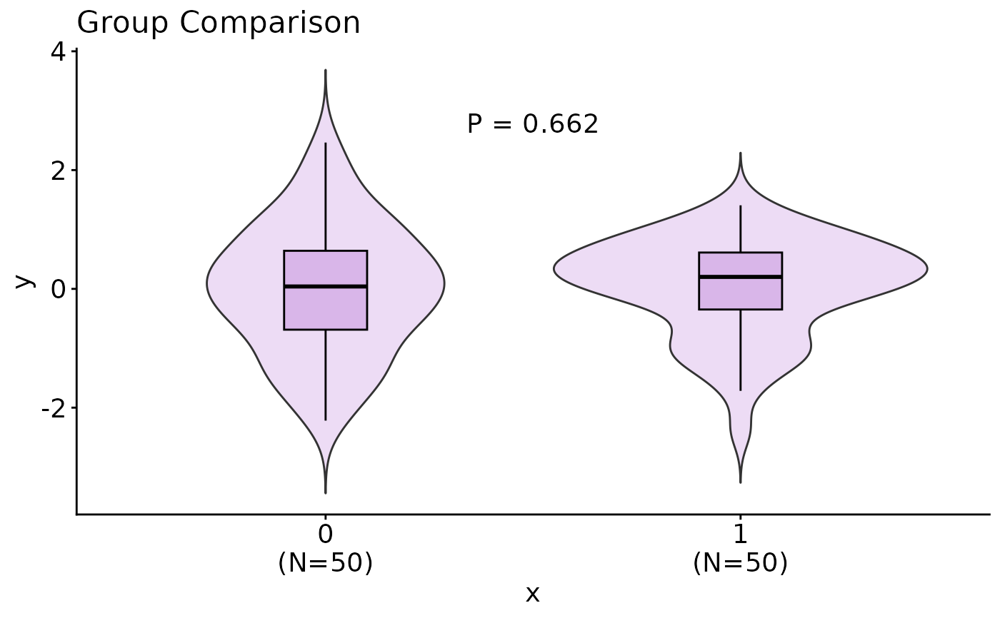
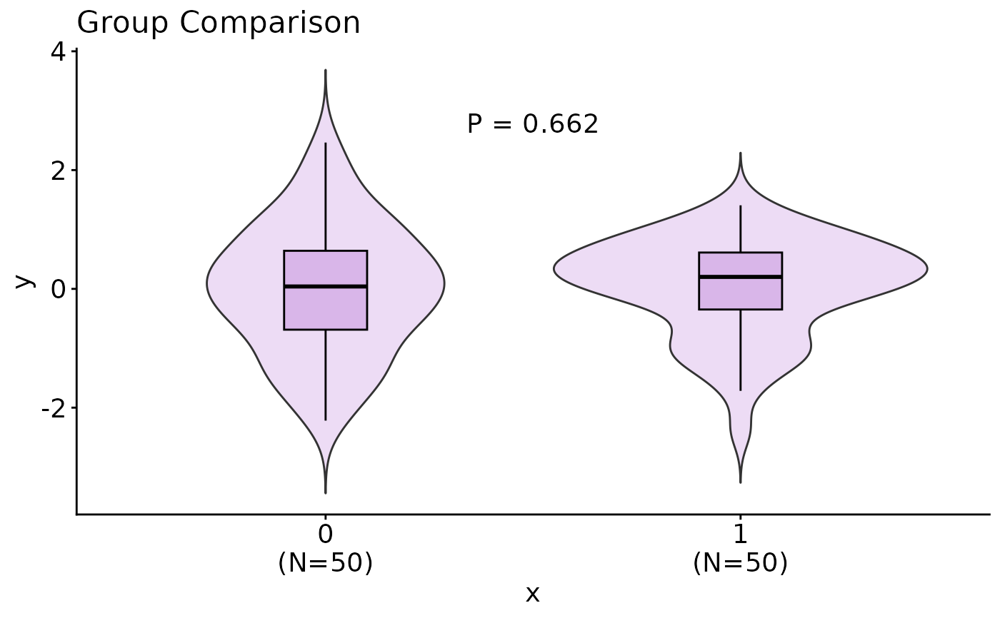

Draw Group Comparison for a Continuous Variable
group_comparison_draw.RdThis function creates a violin + boxplot to visualize the distribution of a continuous variable across groups of a categorical variable, with optional jitter points and annotated p-value.
Usage
group_comparison_draw(
df,
x_col,
y_col,
vector_x = NULL,
vector_y = NULL,
test_method = "wilcox",
title = "Group Comparison",
xlab = NULL,
ylab = NULL,
alpha = 0.8,
main_color = "#BB7CD8",
violin_fill = main_color,
box_fill = main_color,
box_color = "black",
jitter = T,
jitter_size = 2,
jitter_color = "black",
drop_na = F,
annotate_n = T,
title_size = 16,
xlab_size = 14,
ylab_size = 14,
axis_text_size = 14
)Arguments
- df
A data frame (optional if vectors provided).
- x_col
Name of categorical variable in df.
- y_col
Name of numeric variable in df.
- vector_x
Optional categorical vector.
- vector_y
Optional numeric vector.
- test_method
Statistical test:
"wilcox"(default, Mann–Whitney U test) or"t.test".- title
Plot title.
- xlab, ylab
Axis labels.
- alpha
Transparency for violin, boxplot and jitter.
- main_color
Easy way to set the vibe. Good luck trying!
- violin_fill
Fill color for violin.
- box_fill
Fill color for boxplot.
- box_color
Outline color for boxplot.
- jitter
Logical, whether to show jitter. Default TRUE.
- jitter_size
Size of jitter points. Default
2.- jitter_color
Color of jitter points. Default
"black".- drop_na
Logical, whether to drop NA group from x variable. Default
FALSE.- annotate_n
Logical, whether to annotate sample size N for each group. Default
TRUE.- title_size
Font size for plot title. Default
16.- xlab_size
Font size for x-axis label. Default
14.- ylab_size
Font size for y-axis label. Default
14.- axis_text_size
Font size for axis text. Default
14.
Examples
df <- tibble::tibble(group = rep(c(0,1), each=50), prs = rnorm(100))
group_comparison_draw(df, "group", "prs")

group_comparison_draw(df, "group", "prs", annotate_n = TRUE)

group_comparison_draw(vector_x = rep(c(0,1), each=50), vector_y = rnorm(100))
 group_comparison_draw(vector_x = rep(c(0,1), each=50), vector_y = rnorm(100), jitter = FALSE)

group_comparison_draw(vector_x = rep(c(0,1), each=50), vector_y = rnorm(100), jitter = FALSE)
